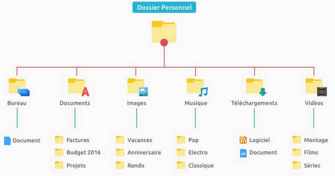

I. La structure d'arbre¶
Cours¶
Les structures linéaires sont peu pratiques pour faire des recherches, des ajouts ou des suppressions de données ordonnées. Les structures arborescentes ou arbres, dont les utilisations en informatique sont multiples, sont plus adaptées à cela.
A. Des exemples¶
A.I. Géographie de la France¶
Identifier, sur la représentation ci-dessous, à quoi correspondent les différentes lignes de l'arbre.
graph TB
A[France] --> B[Auvergne Rhône-Alpes]
B --> F[Ain]
B --> G[Ardêche]
B --> I[...]
B --> H[Haute-Savoie]
A --> C[Bourgogne FC]
A --> D[...]
A --> E[PACA]
C --> J[Côtes d'Or]
C --> K[...]
E --> L[...]
E --> M[Vaucluse]Solution
La première ligne correspond au pays, la deuxième aux régions, la troisième au département. Il y a une relation hiérarchique entre ces 3 éléments : du plus grand au plus petit.
A.II. Une arborescence de fichiers¶
Ci-dessous un exemple de stockage de fichiers et dossier sur un ordinateur. Représentez-le de manière similaire à l'arbre du premier exemple :

Solution
graph TB
A[Dossier personnel] --> B[Bureau]
A --> C[Documents]
A --> D[Images]
A --> E[Musique]
A --> G[Téléchargements]
A --> H[Vidéos]
B --> I[Document]
C --> J[Factures]
C --> K[Budget 2016]
C --> L[Projets]
D --> M[Vacances]
D --> N[Anniversaire]
D --> O[Rando]
E --> P[Pop]
E --> Q[Electro]
E --> R[Classique]
G --> S[Logiciel]
G --> T[Document]
H --> U[Montage]
H --> V[Films]
H --> W[Séries]A.III. Un tournoi¶
Représenter un tournoi à partir des quarts de finales jusqu’à la représentation du vainqueur en utilisant un arbre. Les quarts de finales opposent les équipes suivantes : France-Angleterre (vainqueur France), Maroc-Portugal (vainqueur Maroc), Pays-Bas-Argentine (vainqueur Argentine) et Croatie-Brésil (vainqueur Croatie). En demi-finale, la France bat le Maroc et l'Argentine la Croatie. Je crois que vous connaissez le résultat de la finale...
Solution
graph TB
A[Argentine] --> B[Argentine]
A --> C[France]
B --> D[Croatie]
B --> E[Argentine]
D --> F[Croatie]
D --> G[Brésil]
E --> H[Pays-Bas]
E --> I[Argentine]
C --> K[France]
C --> L[Maroc]
K --> M[France]
K --> N[Angleterre]
L --> O[Maroc]
L --> P[Portugal]B. Définitions¶
B.I. Vocabulaire¶
Définition
Un arbre est un ensemble organisé de nœuds reliés par des branches ou arêtes. Les nœuds ont une relation hiérarchique les uns par rapport aux autres.
Le vocabulaire utilisé est emprunté, entre autres, à la généalogie et à la nature :
- Chaque nœud à un père, dont il est le fils, sauf la racine.
- Un nœud qui n'a pas de fils est appelé une feuille.
- Un nœud avec une valeur (texte, nombre, etc) est dit étiqueté. Si tous les nœuds de l'arbre ont une étiquette, l'arbre est aussi dit étiqueté.
Représentation : L'arbre informatique est un arbre... renversé. La racine est généralement représentée tout en haut.
Sur l'arbre ci-dessous :
- identifier sa racine et distinguer les nœuds des feuilles.
Solution
La racine est A. Des feuilles sont par exemple D ou H, alors que B ou C sont des noeuds.
- identifier le père du nœud étiqueté "H" et donner le(s) fils du nœud étiqueté "B".
Solution
Le père de H est C et les fils de B sont D, E et F.
graph TB
A --> B
A --> C
B --> D
B --> E
B --> F
C --> G
C --> HB.II. Mesures¶
Définitions
- la taille d'un arbre correspond à son nombre de nœuds.
- la profondeur d'un nœud correspond au nombre d'arêtes/de nœuds de la racine jusqu'à ce nœud (la convention utilisée doit vous être précisée !). Nous utiliserons le nombre de noeuds, donc que la racine est à la profondeur 1.
- la hauteur d'un arbre correspond à la profondeur de son nœud le plus profond.
Exemple : Donner la taille et la hauteur de l'arbre de la partie précédente. Quelle est la profondeur du nœud étiqueté "E" ? "C" ?
Sa taille est de 8. La profondeur de E est 3, celle de C est 2.
Exercice : Dessiner un arbre de taille 9, étiqueté par des nombres de 0 à 8, de racine 0 et de hauteur 3.
graph TB
A((0)) --> B((1))
A --> E((4))
A --> C((2))
B --> D((3))
B --> F((7))
C --> G((5))
E --> H((6))
E --> J((8))C. Les arbres binaires¶
C.I. Définition¶
Définitions
Un arbre est dit binaire si chacun de ses nœuds admet au plus deux fils, appelés fils gauche et fils droit.
On appelle sous-arbre gauche, et respectivement sous-arbre droit, d’un nœud l’arbre issu du fils gauche, respectivement fils droit, de ce nœud.
Exemple : entourer les sous-arbres gauche et droit de la racine de l'arbre binaire ci-dessous.
graph TB
A --> B
A --> C
B --> D
B --> E
C --> GExercice : Parmi les exemples 1, 2, et 3 du cours, le(s)quel(s) est/sont des arbres binaires ?
Seul l'arbre de l'exemple 3 est un arbre binaire. Dans les autres, un noeud peut avoir plus de deux fils.
C.II. Mesures¶
C.II.a. Vocabulaire¶
Ces définitions sont données à titre indicatif, pour les besoins des démonstrations suivantes.
- un arbre binaire complet est un arbre dont toutes les feuilles sont à la même profondeur.
- un arbre binaire filiforme est un arbre dont tous les nœuds ont au plus 1 fils.
C.II.b. Encadrement de la hauteur¶
- Dessiner un arbre complet de taille \(n=7\). Quelle est sa hauteur \(h\) ? L'exprimer en fonction de \(n\).
Solution
graph TB
A(( )) --> B(( ))
A --> C(( ))
B --> D(( ))
B --> E(( ))
C --> G(( ))
C --> H(( ))Donc \(7+1 = 2^3\), soit en généralisant, \(n+1=2^h\).
La fonction inverse de la fonction qui transforme \(x\) en \(2^x\) et la fonction \(log_2\), donc :
\(log_2(n+1) = log_2(2^h) = h\)
- Dessiner un arbre filiforme de taille \(n=7\). Quelle est sa hauteur ? L'exprimer en fonction de \(n\).
Solution
graph TB
A(( )) --> B(( ))
B --> C(( ))
C --> D(( ))
D --> E(( ))
E --> F(( ))
F --> G(( ))- En déduire l'encadrement de la hauteur \(h\) d'un arbre binaire en fonction de sa taille \(n\).
Solution
La valeur renvoyée par le logarithme n'est pas toujours entière. Pour qu'elle le soit dans tous les cas, on l'arrondit à l'entier supérieur :
\(\lceil log_2(n+1) \rceil < h\)
On en déduit que \(\lceil log2(n+1) \rceil \leq h \leq n\).
C.II.c. Encadrement de la taille¶
- Dessiner l'arbre binaire de hauteur \(h=3\) comportant le plus de nœuds possibles. De quel type d'arbre s'agit-il ? Exprimer sa taille \(n\) en fonction de \(h\).
Solution
graph TB
A(( )) --> B(( ))
A --> C(( ))
B --> D(( ))
B --> E(( ))
C --> G(( ))
C --> H(( ))\(n=2^0+2^1+2^2=7=2^3-1\). Soit \(n = 2^{h}-1\).
- Dessiner l'arbre binaire de hauteur \(h=3\) comportant le moins de nœuds possibles. De quel type d'arbre s'agit-il ? Exprimer sa taille \(n\) en fonction de \(h\).
Solution
graph TB
A(( )) --> B(( ))
B --> D(( ))Il s'agit d'un arbre filiforme. \(n=3=h\).
- En déduire l'encadrement de la taille \(n\)> d'un arbre binaire en fonction de sa hauteur \(h\).
Solution
On en conclut, en généralisant, que \(h<n <2^{h}-1\).
C.III. Les arbres binaires de recherche¶
Un arbre binaire de recherche (ABR) est un arbre vide ou un arbre binaire ayant les propriétés suivantes :
- tous les nœuds sont étiquetés par des nombres,
- la racine est supérieure ou égale à tout nœud du sous-arbre gauche,
- la racine est inférieure à tout nœud du sous-arbre droit,
- les deux sous-arbres de la racine sont eux-mêmes des ABR.
Exemple : donner un arbre binaire satisfaisant les conditions ci-dessus pour être un ABR.
graph TB
A((10 )) --> B((6))
A --> C((17))
B --> D((1))
B --> E((8))
C --> G((14))
C --> H((22))Exercice : construire un ABR à partir des nombres suivants, en les insérant les uns à la suite des autres : 25, 11, 31, 4, 9, 42, 30, 28, 18.
graph TB
A((25)) --> B((11))
A --> C((31))
B --> D((4))
D --> F((9))
B --> E((18))
C --> G((30))
C --> H((42))
G --> I((28))TD : Exercices sur les arbres¶
Exercice 1 : un arbre généalogique¶
-
Expliquez les choix faits dans la construction de cet arbre généalogique.
-
Peut-on parler d’arbre binaire ?
- Quelle est la racine de l’arbre ?
-
Donner le père de Marie-Thérèse, les fils de Louis le grand dauphin.
-
Donner deux exemples de nœud, de feuille.
-
Donner la profondeur du nœud étiqueté "Marie-Anne" et la profondeur de l’arbre.
Exercice 2 : représenter une expression arithmétique¶
graph TB
A((*)) --> B;
B(('-')) --> C((/));
B-->D((t))
C --> E((y))
C --> F((2))
A-->G((+))
G-->H((75))
G-->I((z))- Quelle expression l’arbre ci-dessus peut-t-il représenter ?
- Donner l’arbre permettant de représenter \(3 + (7/3-1)^3\).
Exercice 3 :¶
Les langages informatiques sont formés à partir d’une grammaire, définissant une utilisation correcte du langage. Pour interpréter le langage Python, un arbre syntaxique du code est utilisé. Pour le code présenté ci-dessous, on propose une version simplifiée de cet arbre :
k = 3
for i in range(4):
k = k*2
graph TB
A(body) --> B;
B(assign) --> C((k));
B-->D((3))
A-->G(for)
G-->H((i))
G-->I(range)
G-->J(body)
I-->K((4))
J-->L(assign)
L-->M((k))
L-->N((*))
N-->O((k))
N-->P((2))Proposer une adaptation de cet arbre pour représenter le code suivant :
k = 2
for i in range(1,5):
k = k*2 + 1
TP : Implémentation des arbres binaires¶
Pour manipuler des arbres binaires, il faut en utiliser une implémentation Python. Comme pour les listes, les piles et les files, nous allons proposer plusieurs implémentations de cette structure.
A. Représentation imbriquée avec un p-uplet¶
On peut représenter les arbres binaires de manière imbriquée avec des p-uplets (type Python : tuple). L’arbre vide est représenté par un p-uplet vide, et, dans tous les autres cas, un nœud est un p-uplet de 3 valeurs contenant :
- l’étiquette du nœud,
- le sous-arbre gauche (éventuellement vide),
- le sous-arbre droit (´eventuellement vide).
A.I. Exemple¶
graph TB
A((E)) --> B(X)
A --> C(L)
B --> D(E)
B --> E(M)
E --> G(P)
C --> H(E)exemple = ('E',
('X',
('E', (), ()),
('M', ('P', (), ()), ())
),
('L',
('E', (), ()),
()
)
)
A.II. Application¶
Représenter l'arbre suivant avec cette méthode.
graph TB
A(( )) --> B(2)
A --> C(0)
B --> D(2)
B --> E(3)B. Avec une classe¶
On se propose dans un deuxième temps d’utiliser la classe ArbreBinaire suivante :
class ArbreBinaire:
def __init__(self, r, g, d):
self.racine = r
self.gauche = g
self.droit = d
gauche et droite sont des arbres binaires, et l’arbre vide est représenté par None.
Instancier un objet de cette classe pour représenter notre arbre.
B.I. Exemple¶
L'arbre de l'exemple donné en A.I. se représente avec cette classe de la manière suivante :
exemple = ArbreBinaire('E',
ArbreBinaire('X',
ArbreBinaire('E', None, None),
ArbreBinaire('M', ArbreBinaire('P', None, None), None) ),
ArbreBinaire('L',
ArbreBinaire('E', None, None),
None,)
)
B.II. Application¶
Représenter l'arbre de la partie A.II. avec cette classe.
Pour visualiser le résultat, utiliser la méthode récursive affiche qui permet de visualiser l’arbre.
def affiche(self, space = 0):
spaces = " "*space
print(spaces, self.racine)
if self.gauche:
self.gauche.affiche(space+1)
if self.droit:
self.droit.affiche(space+1)
B.III. Amélioration de la classe ArbreBinaire¶
Rajouter les accesseurs et les mutateurs des attributs de cette classe (notés getRacine, getABGauche, getABDroit, setRacine, setABGauche, setABDroit).
Nous allons utiliser cette classe et ces méthodes dans un prochain TP.